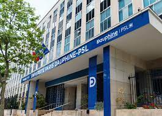

Ceci est un titre
Master 208
Ce parcours Communication marketing forme des communicants et chefs de projets généralistes capables de développer une vision stratégique du marketing et de la communication, de construire des plans d’actions efficients et d’en mesurer la performance. Cette formation permet d’approfondir les connaissances et compétences en communication, marketing avec un fort focus sur le marketing digital.
- Bâtir des stratégies marketing et de communication pour les organisations et les marques
- Comprendre l’environnement de marché dans lequel les organisations et les marques évoluent
- Comprendre les enjeux stratégiques et techniques du digital
- Mettre en œuvre les décisions marketing et de communication marketing
- Gérer des projets et travailler en équipe
- Savoir convaincre et développer de nouvelles idées
- Développer un regard critique sur les effets négatifs des décisions de marketing et communication
